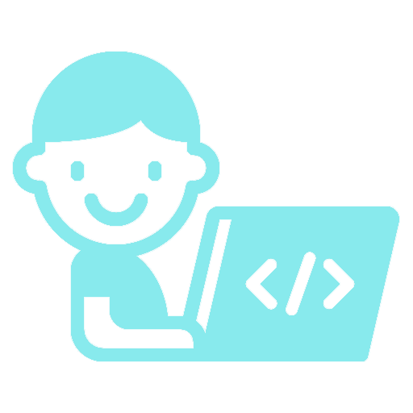

BSEortfolio

ENG1044 - English for
Computer Technology Studies
Computer Technology Studies
Exposing Children to <Programming> is Beneficial.
Group 13 - Syed Sofian Ali, Sean Dhirren, Sah Wen Pin, and Gabriel Soh.